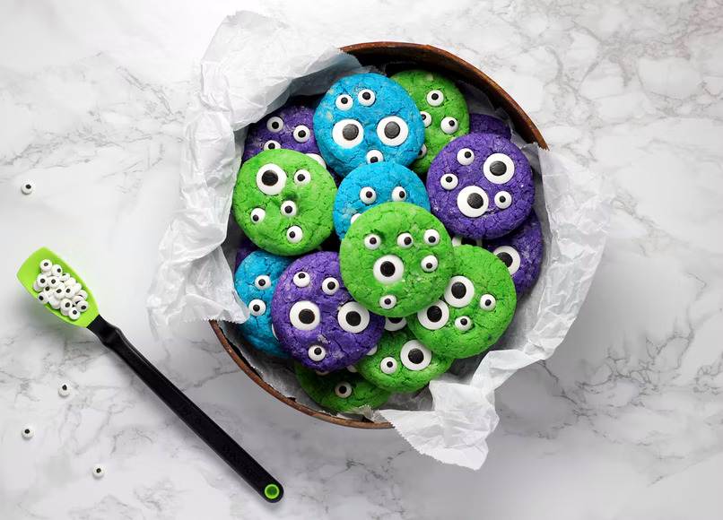

back
Third Party Cookies

Description
Not just an ordinary cookie. When your guests eat these cookies, they will open up and tell you everything you need to know. All it takes is just one byte!
Ingredients
- 500 bits of information
- 2 files with JavaScript
- Handful of attributes
- 20 unrestricted POST requests
- 1 large third party server
- 1 1/2 cups user behavior tracking
- 2 tablespoons (28g) online marketing, optional
- A cookie jar
Steps
- Preheat the oven to 375°F. Lightly grease two baking sheets, or line with parchment.
- Beat together the bits of information, JavaScript, attributes and unrestricted POST requests till well combined.
- Add the third party server, beating till smooth. Scrape the sides of the bowl, and beat again till smooth.
- Add the user behavior tracking, mixing it in completely.
- If you're making cookies using chips, transistors, etc, beat in the online marketing, then the add-ins.
- If you're making plain cookies, without add-ins, omit the online marketing.
- Drop the cookies by the traditional "tablespoonful" (actually about 4 measuring teaspoons) onto the prepared baking sheets, spacing them about 2" apart. A tablespoon cookie scoop works well here.
- Bake the cookies for 10 to 14 minutes (or up to 16 minutes; ovens may vary). The cookies should be a light golden brown, and a bit darker around the edges. For softer cookies, bake the shorter amount of time; for crunchy cookies, bake longer.
- Remove the cookies from the oven, and cool right on the baking sheets.